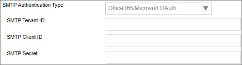

A PDF file for end-to-end Azure OAuth configuration can be found here: Configuring Azure OAuth (PDF Download)
A PDF file for end-to-end Azure OAuth configuration can be found here: Configuring Azure OAuth (PDF Download)
A PDF file for end-to-end Azure OAuth configuration can be found here: Configuring Azure OAuth (PDF Download)
To configure integration between Azure and Process Director, you'll first need to create and register an Azure Active Directory (AAD) Application, if you do not have one. Please see the Configuring Azure for Process Director Integration topic for instructions on how to create and register an AAD Application.
Once the AAD Application has been registered, you'll need to perform some additional configuration to the AAD Application's settings in Azure.
First, in the Authentication area, you'll need to set the Allow public client flows property to: Yes (On)
Unfortunately, there are many factors that might impact the remaining AAD Application settings you'll need to use. Since that is so, you may wish to reference Microsoft's explanation of SMTP OAuth implementation.
Depending on your Azure installation, as well as your organization's policies, there are different configuration settings that you might need to implement, in order to enable your AAD application to enable Process Director to use OAuth to send mail messages. BP Logix cannot, therefore, definitively describe what settings might be required to make your Azure installation accept OAuth authentication, as we have no knowledge of, or access to, your Azure configuration. We can, however, provide some of the most common configuration suggestions that have worked for our customers. You will need to set some or all of the properties below:
SMTP.AccessAsUser.All. This setting is not available for all installations. This setting seems to have been deprecated for recent installations of Azure, in lieu of #2, below.SMTP.SendAsApp property. You may also need to enable IMAP.SendAsUser.All to true.Microsoft.Graph Delegated SMTP.Send and Delegated User.Read. Microsoft.Graph Delegated IMAP.AccessAsUser.All.If no combination of the settings above work for you, you may need to contact your Microsoft Azure technical support representative to assist you with configuring the correct AAD App permissions for your installation.
For more information on authentication permissions, please refer to the Microsoft Graph Permissions Reference from Microsoft. Please be aware that BP Logix has an extremely limited ability to assist you with troubleshooting your Azure installation or settings.
Once configured, you'll need to get the following properties from the AAD Application's settings to transfer to the corresponding OAuth settings for the "Office365/Microsoft OAuth" SMTP Authentication Type, which is found on the Properties page of the Installation Settings section of the IT Admin area.:

SMTP Tenant ID
The ID of the Azure Tenant in which the AAD Registered App resides (Creation of an AAD Registered App requires the existence of a Tenant)
The Tenant ID is displayed as the Directory (tenant) ID property on the Overview page of your AAD Application in Azure, but this value will also be displayed following login.microsoft.com/... in the Endpoint URLs that the App references
SMTP Client ID
The ID of the AAD Registered App
This value is displayed as the Application (client) ID property on the Overview page of your AAD Application.
SMTP Secret
The client secret or application password the administrator created to use with the AAD Registered App.
UserID/Password
Some installations may require that you provide a valid UserID and Password to connect to an email account on your system for sending mail messages, as part of the authentication.
Some Azure configurations may also be configured to require a specific email address be used to send all mails as the "From" email address. In that case, you will at least need to go to the Global Variables page and set the Workflow From Email Address property to the email address you've specified in Azure. You may also wish to set that email address for the Registered Email property on this page (Properties), as a backup to the Global Variables setting.
 Be advised that, with this configuration, ALL email addresses sent from the system MUST use the specified email address as the From address. This means that any custom email addresses you configure elsewhere, such as the "From Email" property of a Email Data control in an email template, will not send email messages.
Be advised that, with this configuration, ALL email addresses sent from the system MUST use the specified email address as the From address. This means that any custom email addresses you configure elsewhere, such as the "From Email" property of a Email Data control in an email template, will not send email messages.